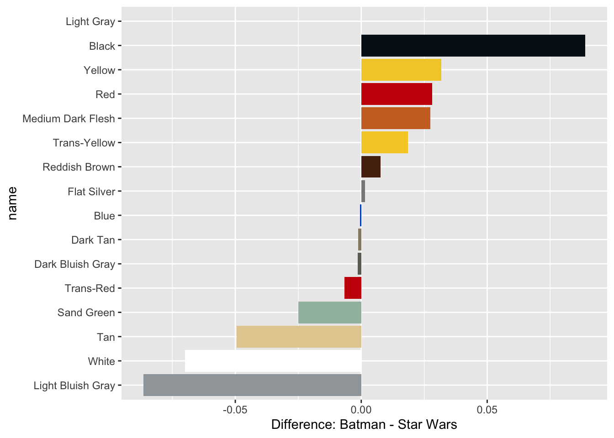
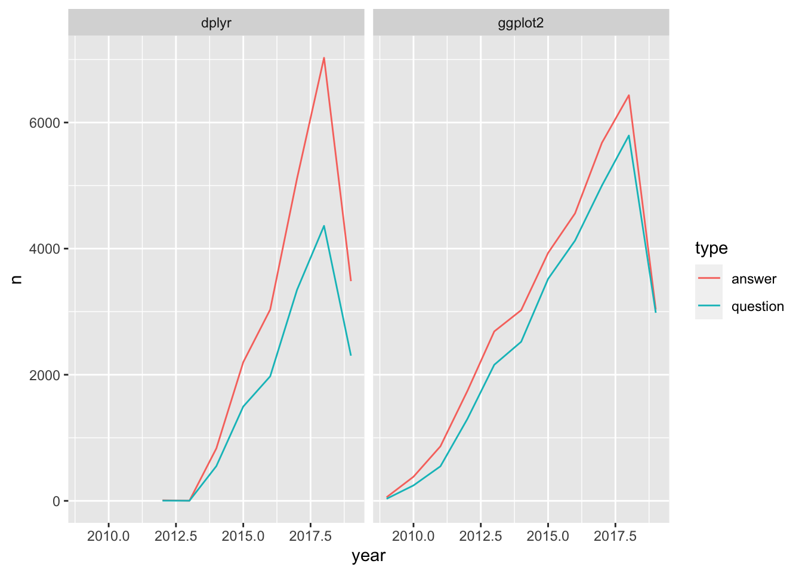

8 Joining Data with dplyr
https://learn.datacamp.com/courses/joining-data-with-dplyr
8.1 Joining Tables
inner_join()
The inner_join() is the key to bring tables together.This function will allow two tables to be joined from the commonly-shared value column(s) on which they should be joined.
In this example, parts and part_categories are merged by using part_cat_id and id columns from each dataset, then the suffix() added the names to help differentiate the variables:
glimpse(parts)## Rows: 17,501
## Columns: 3
## $ part_num <chr> "0901", "0902", "0903", "0904", "1", "10016414", "10026stk…
## $ name <chr> "Baseplate 16 x 30 with Set 080 Yellow House Print", "Base…
## $ part_cat_id <dbl> 1, 1, 1, 1, 7, 58, 58, 44, 65, 27, 27, 27, 65, 65, 27, 27,…glimpse(part_categories)## Rows: 64
## Columns: 2
## $ id <dbl> 1, 3, 4, 5, 6, 7, 8, 9, 11, 12, 13, 14, 15, 16, 17, 18, 19, 20, 2…
## $ name <chr> "Baseplates", "Bricks Sloped", "Duplo, Quatro and Primo", "Bricks…parts %>%
inner_join(part_categories, by = c("part_cat_id" = "id"), suffix = c("_part", "_category"))## # A tibble: 17,501 × 4
## part_num name_part part_cat_id name_category
## <chr> <chr> <dbl> <chr>
## 1 0901 Baseplate 16 x 30 with Set 080 Yello… 1 Baseplates
## 2 0902 Baseplate 16 x 24 with Set 080 Small… 1 Baseplates
## 3 0903 Baseplate 16 x 24 with Set 080 Red H… 1 Baseplates
## 4 0904 Baseplate 16 x 24 with Set 080 Large… 1 Baseplates
## 5 1 Homemaker Bookcase 2 x 4 x 4 7 Containers
## 6 10016414 Sticker Sheet #1 for 41055-1 58 Stickers
## 7 10026stk01 Sticker for Set 10026 - (44942/41841… 58 Stickers
## 8 10039 Pullback Motor 8 x 4 x 2/3 44 Mechanical
## 9 10048 Minifig Hair Tousled 65 Minifig Headwear
## 10 10049 Minifig Shield Broad with Spiked Bot… 27 Minifig Accesso…
## # … with 17,491 more rowsAnother situation is when wanting to merge two datasets that share the same column(s), using c() won’t be necessary. Here, the by = argument only needs the shared column name:
parts %>%
inner_join(inventory_parts, by = "part_num")## # A tibble: 258,958 × 6
## part_num name part_cat_id inventory_id color_id quantity
## <chr> <chr> <dbl> <dbl> <dbl> <dbl>
## 1 0901 Baseplate 16 x 30 with S… 1 1973 2 1
## 2 0902 Baseplate 16 x 24 with S… 1 1973 2 1
## 3 0903 Baseplate 16 x 24 with S… 1 1973 2 1
## 4 0904 Baseplate 16 x 24 with S… 1 1973 2 1
## 5 1 Homemaker Bookcase 2 x 4… 7 508 15 1
## 6 1 Homemaker Bookcase 2 x 4… 7 1158 15 2
## 7 1 Homemaker Bookcase 2 x 4… 7 6590 15 2
## 8 1 Homemaker Bookcase 2 x 4… 7 9679 15 2
## 9 1 Homemaker Bookcase 2 x 4… 7 12256 1 2
## 10 1 Homemaker Bookcase 2 x 4… 7 13356 15 1
## # … with 258,948 more rowsJoining Multiple Datasets
Use inner_join() and the pipe (%>%) to join together multiple datasets.
In this example, sets, a table that tells us about each LEGO kit, will be connected with inventories, a table that tells us the specific version of a given set, and finally to inventory_parts, a table which tells us how many of each part is available in each LEGO kit:
sets %>%
# Add inventories using an inner join
inner_join(inventories, by = "set_num") %>%
# Add inventory_parts using an inner join
inner_join(inventory_parts, by = c("id" = "inventory_id"))## # A tibble: 258,958 × 9
## set_num name year theme_id id version part_num color_id quantity
## <chr> <chr> <dbl> <dbl> <dbl> <dbl> <chr> <dbl> <dbl>
## 1 700.3-1 Medium Gift … 1949 365 24197 1 bdoor01 2 2
## 2 700.3-1 Medium Gift … 1949 365 24197 1 bdoor01 15 1
## 3 700.3-1 Medium Gift … 1949 365 24197 1 bdoor01 4 1
## 4 700.3-1 Medium Gift … 1949 365 24197 1 bslot02 15 6
## 5 700.3-1 Medium Gift … 1949 365 24197 1 bslot02 2 6
## 6 700.3-1 Medium Gift … 1949 365 24197 1 bslot02 4 6
## 7 700.3-1 Medium Gift … 1949 365 24197 1 bslot02 1 6
## 8 700.3-1 Medium Gift … 1949 365 24197 1 bslot02 14 6
## 9 700.3-1 Medium Gift … 1949 365 24197 1 bslot02a 15 6
## 10 700.3-1 Medium Gift … 1949 365 24197 1 bslot02a 2 6
## # … with 258,948 more rowsTo utilize this, join an additional table, colors, which tell the color of each part in each set, to answer the question, “what is the most common color of a LEGO piece?”
# Count the number of colors and sort
sets %>%
inner_join(inventories, by = "set_num") %>%
inner_join(inventory_parts, by = c("id" = "inventory_id")) %>%
inner_join(colors, by = c("color_id" = "id"), suffix = c("_set", "_color")) %>%
count(name_color, sort = TRUE)## # A tibble: 134 × 2
## name_color n
## <chr> <int>
## 1 Black 48068
## 2 White 30105
## 3 Light Bluish Gray 26024
## 4 Red 21602
## 5 Dark Bluish Gray 19948
## 6 Yellow 17088
## 7 Blue 12980
## 8 Light Gray 8632
## 9 Reddish Brown 6960
## 10 Tan 6664
## # … with 124 more rowsFrom the output, Black seems to be the most common LEGO piece.
inner_join() ONLY keeps the perfectly matched observations between two connected datasets.
8.2 Left and Right Joins
left_join()
left_join() keeps ALL the observations from the left dataset and keep ONLY the matched observations from the right-side dataset.
Combine the star_destroyer and millennium_falcon tables with the suffixes _falcon and _star_destroyer:
inventory_parts_joined <- inventories %>%
inner_join(inventory_parts, by = c("id" = "inventory_id")) %>%
select(-id, -version) %>%
arrange(desc(quantity))
millennium_falcon <- inventory_parts_joined %>%
filter(set_num == "7965-1")
star_destroyer <- inventory_parts_joined %>%
filter(set_num == "75190-1")
millennium_falcon %>%
left_join(star_destroyer, by = c("part_num", "color_id"), suffix = c("_falcon", "_star_destroyer"))## # A tibble: 263 × 6
## set_num_falcon part_num color_id quantity_falcon set_num_star_destroyer
## <chr> <chr> <dbl> <dbl> <chr>
## 1 7965-1 63868 71 62 <NA>
## 2 7965-1 3023 0 60 <NA>
## 3 7965-1 3021 72 46 75190-1
## 4 7965-1 2780 0 37 75190-1
## 5 7965-1 60478 72 36 <NA>
## 6 7965-1 6636 71 34 75190-1
## 7 7965-1 3009 71 28 75190-1
## 8 7965-1 3665 71 22 <NA>
## 9 7965-1 2412b 72 20 75190-1
## 10 7965-1 3010 71 19 <NA>
## # … with 253 more rows, and 1 more variable: quantity_star_destroyer <dbl>From the output, the quantity_falcon kept all the observations, and the quantity_star_destroyer only kept the matched ones, the NAs are the unmatched ones.
right_join()
right_join() keeps ALL the observations from the right dataset and keep ONLY the matched observations from the left-side dataset.
In this example, count the part_cat_id from parts, before using a right_join to join with part_categories. This is to know the count of part_cat_id in parts, and also to see if there are any part_cat_id observations not available in parts by using filter():
parts %>%
count(part_cat_id) %>%
right_join(part_categories, by = c("part_cat_id" = "id")) %>%
# Filter for NA
filter(is.na(n))## # A tibble: 1 × 3
## part_cat_id n name
## <dbl> <int> <chr>
## 1 66 NA ModulexHere, the left-side dataset is the n column, which contains a NA observation, and the name column is the right-sde dataset which retains all the observations.
Joining tables to themselves
Tables can be joined to themselves!
In the themes dataset, there are two columns id and parent_id, which has a connection to each other. On the parent_id side, Arctic Technic, Competition, Expert Builder, Model are assigned as 1 on parent_id column, which are sub-branches of the Technic, which has id of 1 on the left-side.
Then, the Airport, Construction, Farm, Fire, Harbor are assigned as 5 on parent_id column, which are the sub-branches of Model, which has id of 5 of the left-side.
This table has a hierarchical table.
themes## # A tibble: 665 × 3
## id name parent_id
## <dbl> <chr> <dbl>
## 1 1 Technic NA
## 2 2 Arctic Technic 1
## 3 3 Competition 1
## 4 4 Expert Builder 1
## 5 5 Model 1
## 6 6 Airport 5
## 7 7 Construction 5
## 8 8 Farm 5
## 9 9 Fire 5
## 10 10 Harbor 5
## # … with 655 more rowsthemes %>%
# Inner join the themes table
inner_join(themes, by = c("id" = "parent_id"), suffix = c("_parent", "_child")) %>%
# Filter for the "Harry Potter" parent name
filter(name_parent == "Harry Potter")## # A tibble: 6 × 5
## id name_parent parent_id id_child name_child
## <dbl> <chr> <dbl> <dbl> <chr>
## 1 246 Harry Potter NA 247 Chamber of Secrets
## 2 246 Harry Potter NA 248 Goblet of Fire
## 3 246 Harry Potter NA 249 Order of the Phoenix
## 4 246 Harry Potter NA 250 Prisoner of Azkaban
## 5 246 Harry Potter NA 251 Sorcerer's Stone
## 6 246 Harry Potter NA 667 Fantastic BeastsThe code chunk above outputs all the sub-branches that belong to the Harry Potter.
Joining themes to their grandchildren
inner_join() can merge themes to a filtered version of itself again to establish a connection between our last join’s children and their children. Use another inner join to combine themes again with itself:
# Join themes to itself again to find the grandchild relationships
themes %>%
inner_join(themes, by = c("id" = "parent_id"), suffix = c("_parent", "_child")) %>%
inner_join(themes, by = c("id_child" = "parent_id"), suffix = c("_parent", "_grandchild"))## # A tibble: 158 × 7
## id_parent name_parent parent_id id_child name_child id_grandchild name
## <dbl> <chr> <dbl> <dbl> <chr> <dbl> <chr>
## 1 1 Technic NA 5 Model 6 Airport
## 2 1 Technic NA 5 Model 7 Constructi…
## 3 1 Technic NA 5 Model 8 Farm
## 4 1 Technic NA 5 Model 9 Fire
## 5 1 Technic NA 5 Model 10 Harbor
## 6 1 Technic NA 5 Model 11 Off-Road
## 7 1 Technic NA 5 Model 12 Race
## 8 1 Technic NA 5 Model 13 Riding Cyc…
## 9 1 Technic NA 5 Model 14 Robot
## 10 1 Technic NA 5 Model 15 Traffic
## # … with 148 more rowsLeft-joining a table to itself
Some themes might not have any sub-branches at all, which means they won’t be included in the inner_join(). Identify those with a left_join() and a filter():
themes %>%
# Left join the themes table to its own children
left_join(themes, by = c("id" = "parent_id"), suffix = c("_parent", "_child")) %>%
# Filter for themes that have no child themes
filter(is.na(name_child))## # A tibble: 586 × 5
## id name_parent parent_id id_child name_child
## <dbl> <chr> <dbl> <dbl> <chr>
## 1 2 Arctic Technic 1 NA <NA>
## 2 3 Competition 1 NA <NA>
## 3 4 Expert Builder 1 NA <NA>
## 4 6 Airport 5 NA <NA>
## 5 7 Construction 5 NA <NA>
## 6 8 Farm 5 NA <NA>
## 7 9 Fire 5 NA <NA>
## 8 10 Harbor 5 NA <NA>
## 9 11 Off-Road 5 NA <NA>
## 10 12 Race 5 NA <NA>
## # … with 576 more rowsThe output above shows all the theme groups that doesn’t have any sub-branches.
8.3 Full, Semi, and Anti Joins
full_join()
left_join and right_join keeps all the observations in one of the two sides. full_join() keeps all the observations on BOTH sides:
inventory_sets_themes <- inventory_parts_joined %>%
inner_join(sets, by = "set_num") %>%
inner_join(themes, by = c("theme_id" = "id"), suffix = c("_set", "_theme"))
batman <- inventory_sets_themes %>%
filter(name_theme == "Batman")
batman_parts <- batman %>%
count(part_num, color_id, wt = quantity)
star_wars <- inventory_sets_themes %>%
filter(name_theme == "Star Wars")
star_wars_parts <- star_wars %>%
count(part_num, color_id, wt = quantity)The variables above set up the data to prepare for the full_join to find out the difference pieces used in batman and star_wars:
batman_parts %>%
# Combine the star_wars_parts table
full_join(star_wars_parts, by = c("part_num", "color_id"), suffix = c("_batman", "_star_wars")) %>%
# Replace NAs with 0s in the n_batman and n_star_wars columns
replace_na(list(n_batman = 0, n_star_wars = 0))## # A tibble: 3,628 × 4
## part_num color_id n_batman n_star_wars
## <chr> <dbl> <dbl> <dbl>
## 1 10113 0 11 0
## 2 10113 272 1 0
## 3 10113 320 1 0
## 4 10183 57 1 0
## 5 10190 0 2 0
## 6 10201 0 1 21
## 7 10201 4 3 0
## 8 10201 14 1 0
## 9 10201 15 6 0
## 10 10201 71 4 5
## # … with 3,618 more rowssemi_join()
semi_join() filter and output the observations that of the left-side dataset that matches with the right-side. (ONLY show the left-side observations that arematched, not showing both datasets).
Let’s focus on the batwing dataset, determine which parts are in both the batwing and batmobile sets.
batmobile <- inventory_parts_joined %>%
filter(set_num == "7784-1") %>%
select(-set_num)
batwing <- inventory_parts_joined %>%
filter(set_num == "70916-1") %>%
select(-set_num)
# Filter the batwing set for parts that are also in the batmobile set
batwing %>%
semi_join(batmobile, by = "part_num")## # A tibble: 126 × 3
## part_num color_id quantity
## <chr> <dbl> <dbl>
## 1 3023 0 22
## 2 3024 0 22
## 3 3623 0 20
## 4 2780 0 17
## 5 3666 0 16
## 6 3710 0 14
## 7 6141 4 12
## 8 2412b 71 10
## 9 6141 72 10
## 10 6558 1 9
## # … with 116 more rowsanti_join()
The opposite of semi_join is anti_join(). It shows the observations that are in the left-side dataset but is not in the right-side dataset. In other words, what observations are in the first table but not in the second table?
Let’s focus on the batwing dataset, determine which sets are in one, but not the other.
# Filter the batwing set for parts that aren't in the batmobile set
batwing %>%
anti_join(batmobile, by = "part_num")## # A tibble: 183 × 3
## part_num color_id quantity
## <chr> <dbl> <dbl>
## 1 11477 0 18
## 2 99207 71 18
## 3 22385 0 14
## 4 99563 0 13
## 5 10247 72 12
## 6 2877 72 12
## 7 61409 72 12
## 8 11153 0 10
## 9 98138 46 10
## 10 2419 72 9
## # … with 173 more rowsAggregating sets to look at their differences
To compare two individual sets, and the kinds of LEGO pieces that comprise them, aggregate the data into separate themes. Additionally, add a column to understand the percentages of specific pieces that are part of each set, rather than looking at the numbers of pieces alone.
inventory_parts_themes <- inventories %>%
inner_join(inventory_parts, by = c("id" = "inventory_id")) %>%
arrange(desc(quantity)) %>%
select(-id, -version) %>%
inner_join(sets, by = "set_num") %>%
inner_join(themes, by = c("theme_id" = "id"), suffix = c("_set", "_theme"))
batman_colors <- inventory_parts_themes %>%
filter(name_theme == "Batman") %>%
group_by(color_id) %>%
summarize(total = sum(quantity)) %>%
mutate(percent = total / sum(total))
star_wars_colors <- inventory_parts_themes %>%
filter(name_theme == "Star Wars") %>%
group_by(color_id) %>%
summarize(total = sum(quantity)) %>%
mutate(percent = total / sum(total))Combining sets
Prior to visualizing the data, combine these tables to be able to directly compare the themes’ colors. Join the batman_colors and star_wars_colors tables; be sure to include all observations from both tables. Replace the NAs in the total_batman and total_star_wars columns.
Add a difference column that calculates the difference between percent_batman and percent_star_wars, and a total column, which is the sum of total_batman and total_star_wars.
Add a filter to select observations where total is at least 200.
colors_joined <- batman_colors %>%
# Join the Batman and Star Wars colors
full_join(star_wars_colors, by = "color_id", suffix = c("_batman", "_star_wars")) %>%
# Replace NAs in the total_batman and total_star_wars columns
replace_na(list(total_batman = 0, total_star_wars = 0)) %>%
inner_join(colors, by = c("color_id" = "id")) %>%
# Create the difference and total columns
mutate(difference = percent_batman - percent_star_wars,
total = total_batman + total_star_wars) %>%
# Filter for totals greater than 200
filter(total >= 200) %>%
mutate(name = fct_reorder(name, difference))
colors_joined## # A tibble: 16 × 9
## color_id total_batman percent_batman total_star_wars percent_star_wars name
## <dbl> <dbl> <dbl> <dbl> <dbl> <fct>
## 1 0 2807 0.296 3258 0.207 Black
## 2 1 243 0.0256 410 0.0261 Blue
## 3 4 529 0.0558 434 0.0276 Red
## 4 14 426 0.0449 207 0.0132 Yellow
## 5 15 404 0.0426 1771 0.113 White
## 6 19 142 0.0150 1012 0.0644 Tan
## 7 28 98 0.0103 183 0.0116 Dark …
## 8 36 86 0.00907 246 0.0156 Trans…
## 9 46 200 0.0211 39 0.00248 Trans…
## 10 70 297 0.0313 373 0.0237 Reddi…
## 11 71 1148 0.121 3264 0.208 Light…
## 12 72 1453 0.153 2433 0.155 Dark …
## 13 84 278 0.0293 31 0.00197 Mediu…
## 14 179 154 0.0162 232 0.0148 Flat …
## 15 378 22 0.00232 430 0.0273 Sand …
## 16 7 0 NA 209 0.0133 Light…
## # … with 3 more variables: rgb <chr>, difference <dbl>, total <dbl>Visualizing the difference: Batman and Star Wars
Create a bar plot using the colors_joined table to display the most prominent colors in the Batman and Star Wars themes, with the bars colored by their name.
color_palette <- structure(c("#05131D", "#0055BF", "#C91A09", "#F2CD37", "#FFFFFF",
"#E4CD9E", "#958A73", "#C91A09", "#F5CD2F", "#582A12", "#A0A5A9",
"#6C6E68", "#CC702A", "#898788", "#A0BCAC"), .Names = c("Black",
"Blue", "Red", "Yellow", "White", "Tan", "Dark Tan", "Trans-Red",
"Trans-Yellow", "Reddish Brown", "Light Bluish Gray", "Dark Bluish Gray",
"Medium Dark Flesh", "Flat Silver", "Sand Green"))# Create a bar plot using colors_joined and the name and difference columns
ggplot(colors_joined, aes(name, difference, fill = name)) +
geom_col() +
coord_flip() +
scale_fill_manual(values = color_palette, guide = FALSE) +
labs(y = "Difference: Batman - Star Wars")## Warning: Removed 1 rows containing missing values (position_stack).## Warning: It is deprecated to specify `guide = FALSE` to remove a guide. Please
## use `guide = "none"` instead.
8.4 Case Study: Joins on Stack Overflow Data
questions <- readRDS(gzcon(url("https://assets.datacamp.com/production/repositories/5284/datasets/89d5a716b4f41dbe4fcda1a7a1190f24f58f0e47/questions.rds")))
tags <- readRDS(gzcon(url("https://assets.datacamp.com/production/repositories/5284/datasets/207c31b235786e73496fd7e58e416779911a9d98/tags.rds")))
question_tags <- readRDS(gzcon(url("https://assets.datacamp.com/production/repositories/5284/datasets/966938d665c69bffd87393b345ea2837a94bab97/question_tags.rds")))
answers <- readRDS(gzcon(url("https://assets.datacamp.com/production/repositories/5284/datasets/6cb9c039aa8326d98de37afefa32e1c458764638/answers.rds")))Left-joining questions and tags
Three of the Stack Overflow survey datasets are questions, question_tags, and tags:
questions: an ID and the score, or how many times the question has been upvoted; the data only includes R-based questions
question_tags: a tag ID for each question and the question’s id
tags: a tag id and the tag’s name, which can be used to identify the subject of each question, such as ggplot2 or dplyr
In this exercise, stitch together these datasets and replacing NAs in important fields:
# Replace the NAs in the tag_name column
questions_with_tags <- questions %>%
left_join(question_tags, by = c("id" = "question_id")) %>%
left_join(tags, by = c("tag_id" = "id")) %>%
replace_na(list(tag_name = "only-r"))
questions_with_tags## # A tibble: 545,694 × 5
## id creation_date score tag_id tag_name
## <int> <date> <int> <dbl> <chr>
## 1 22557677 2014-03-21 1 18 regex
## 2 22557677 2014-03-21 1 139 string
## 3 22557677 2014-03-21 1 16088 time-complexity
## 4 22557677 2014-03-21 1 1672 backreference
## 5 22557707 2014-03-21 2 NA only-r
## 6 22558084 2014-03-21 2 6419 time-series
## 7 22558084 2014-03-21 2 92764 panel-data
## 8 22558395 2014-03-21 2 5569 function
## 9 22558395 2014-03-21 2 134 sorting
## 10 22558395 2014-03-21 2 9412 vectorization
## # … with 545,684 more rowsComparing scores across tags
Let’s do a quick bit of analysis on it! You’ll use familiar dplyr verbs like group_by, summarize, arrange, and n to find out the average score of the most asked questions:
questions_with_tags %>%
# Group by tag_name
group_by(tag_name) %>%
# Get mean score and num_questions
summarize(score = mean(score),
num_questions = n()) %>%
# Sort num_questions in descending order
arrange(desc(num_questions))## # A tibble: 7,841 × 3
## tag_name score num_questions
## <chr> <dbl> <int>
## 1 only-r 1.26 48541
## 2 ggplot2 2.61 28228
## 3 dataframe 2.31 18874
## 4 shiny 1.45 14219
## 5 dplyr 1.95 14039
## 6 plot 2.24 11315
## 7 data.table 2.97 8809
## 8 matrix 1.66 6205
## 9 loops 0.743 5149
## 10 regex 2 4912
## # … with 7,831 more rowsWhat tags never appear on R questions?
The tags table includes all Stack Overflow tags, but some have nothing to do with R. Filter for just the tags that never appear on an R question with anti_join:
# Using a join, filter for tags that are never on an R question
tags %>%
anti_join(question_tags, by = c("id" = "tag_id"))## # A tibble: 40,459 × 2
## id tag_name
## <dbl> <chr>
## 1 124399 laravel-dusk
## 2 124402 spring-cloud-vault-config
## 3 124404 spring-vault
## 4 124405 apache-bahir
## 5 124407 astc
## 6 124408 simulacrum
## 7 124410 angulartics2
## 8 124411 django-rest-viewsets
## 9 124414 react-native-lightbox
## 10 124417 java-module
## # … with 40,449 more rowsFinding gaps between questions and answers
Join together questions with answers to measure the time between questions and answers.
Use an inner_join to combine the questions and answers tables using the suffixes "_question" and "_answer", respectively.
Subtract creation_date_question from creation_date_answer within the as.integer() function to create the gap column.
questions %>%
# Inner join questions and answers with proper suffixes
inner_join(answers, by = c("id" = "question_id"), suffix = c("_question", "_answer")) %>%
# Subtract creation_date_question from creation_date_answer to create gap
mutate(gap = as.integer(creation_date_answer - creation_date_question)) ## # A tibble: 380,643 × 7
## id creation_date_question score_question id_answer creation_date_answer
## <int> <date> <int> <int> <date>
## 1 22557677 2014-03-21 1 22560670 2014-03-21
## 2 22557707 2014-03-21 2 22558516 2014-03-21
## 3 22557707 2014-03-21 2 22558726 2014-03-21
## 4 22558084 2014-03-21 2 22558085 2014-03-21
## 5 22558084 2014-03-21 2 22606545 2014-03-24
## 6 22558084 2014-03-21 2 22610396 2014-03-24
## 7 22558084 2014-03-21 2 34374729 2015-12-19
## 8 22558395 2014-03-21 2 22559327 2014-03-21
## 9 22558395 2014-03-21 2 22560102 2014-03-21
## 10 22558395 2014-03-21 2 22560288 2014-03-21
## # … with 380,633 more rows, and 2 more variables: score_answer <int>, gap <int>Joining question and answer counts
Determine how many questions actually yield answers. Count the number of answers for each question, then join the answers counts with the questions table:
answer_counts <- answers %>%
count(question_id, sort = TRUE)
question_answer_counts <- questions %>%
left_join(answer_counts, by = c("id" = "question_id")) %>%
replace_na(list(n = 0))Average answers by question
Determine, on average, how many answers each questions gets. Some of the important variables from this table include: n, the number of answers for each question, and tag_name, the name of each tag associated with each question.
tagged_answers <- question_answer_counts %>%
inner_join(question_tags, by = c("id" = "question_id")) %>%
inner_join(tags, by = c("tag_id" = "id"))
tagged_answers %>%
# Aggregate by tag_name
group_by(tag_name) %>%
# Summarize questions and average_answers
summarize(questions = n(),
average_answers = mean(n)) %>%
# Sort the questions in descending order
arrange(desc(questions))## # A tibble: 7,840 × 3
## tag_name questions average_answers
## <chr> <int> <dbl>
## 1 ggplot2 28228 1.15
## 2 dataframe 18874 1.67
## 3 shiny 14219 0.921
## 4 dplyr 14039 1.55
## 5 plot 11315 1.23
## 6 data.table 8809 1.47
## 7 matrix 6205 1.45
## 8 loops 5149 1.39
## 9 regex 4912 1.91
## 10 function 4892 1.30
## # … with 7,830 more rowsbind_rows()
The bind_row function basically merges two tables together, or stack them into one big dataset instead of leaving them as two seperate tables.
Binding and counting posts with tags
Combine the questions_with_tags and answers_with_tags tables into posts_with_tags.
Add a year column to the posts_with_tags table, then aggregate to count posts by type, year, and tag_name.
questions_with_tags <- questions %>%
inner_join(question_tags, by = c("id" = "question_id")) %>%
inner_join(tags, by = c("tag_id" = "id"))
answers_with_tags <- answers %>%
inner_join(question_tags, by = "question_id") %>%
inner_join(tags, by = c("tag_id" = "id"))
# Combine the two tables into posts_with_tags
posts_with_tags <- bind_rows(questions_with_tags %>% mutate(type = "question"),
answers_with_tags %>% mutate(type = "answer"))
# Add a year column, then aggregate by type, year, and tag_name
by_type_year_tag <- posts_with_tags %>%
mutate(year = year(creation_date)) %>%
count(type, year, tag_name)
by_type_year_tag## # A tibble: 58,299 × 4
## type year tag_name n
## <chr> <dbl> <chr> <int>
## 1 answer 2008 bayesian 1
## 2 answer 2008 dataframe 3
## 3 answer 2008 dirichlet 1
## 4 answer 2008 eof 1
## 5 answer 2008 file 1
## 6 answer 2008 file-io 1
## 7 answer 2008 function 7
## 8 answer 2008 global-variables 7
## 9 answer 2008 math 2
## 10 answer 2008 mathematical-optimization 1
## # … with 58,289 more rowsThe code chunk outputs a dataset of posts (either questions or answers) that are tagged with their created dates, and a count for that post.
Visualizing questions and answers in tags
Create a plot to examine the information that the table contains about questions and answers for the dplyr and ggplot2 tags.
Filter the by_type_year_tag table for the dplyr and ggplot2 tags.
Create a line plot with that filtered table that plots the frequency (n) over time, colored by question/answer and faceted by tag.
# Filter for the dplyr and ggplot2 tag names
by_type_year_tag_filtered <- by_type_year_tag %>%
filter(tag_name %in% c("dplyr", "ggplot2"))
# Create a line plot faceted by the tag name
ggplot(by_type_year_tag_filtered, aes(year, n, color = type)) +
geom_line() +
facet_wrap(~ tag_name)